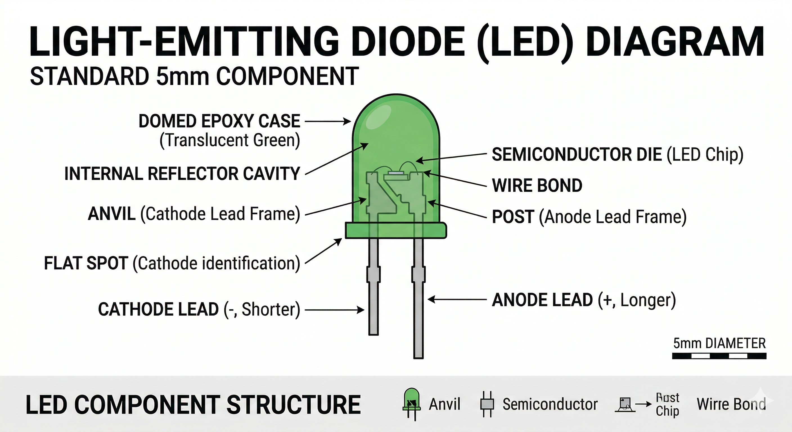

An LED is a semiconductor light source that emits light when current flows through it. Electrons in the semiconductor recombine with electron holes, releasing energy in the form of photons.

LEDs are polarized components, meaning they only allow current to flow in one direction.
| Pin | Function |
|---|---|
| Anode (A) | Positive terminal. Connect to a digital pin (via a resistor). |
| Cathode (C) | Negative terminal. Connect to Ground (GND). |
In OpenHW Studio, the LED will visually light up when the simulation logic detects a voltage difference between the Anode and Cathode. If you forget a resistor, the emulator may show a warning or simulated "burn-out" effect!
The classic "Blink" sketch is the most common way to test an LED.
void setup() {
// initialize digital pin LED_BUILTIN as an output.
pinMode(13, OUTPUT);
}
// the loop function runs over and over again forever
void loop() {
digitalWrite(13, HIGH); // turn the LED on (HIGH is the voltage level)
delay(1000); // wait for a second
digitalWrite(13, LOW); // turn the LED off by making the voltage LOW
delay(1000); // wait for a second
}